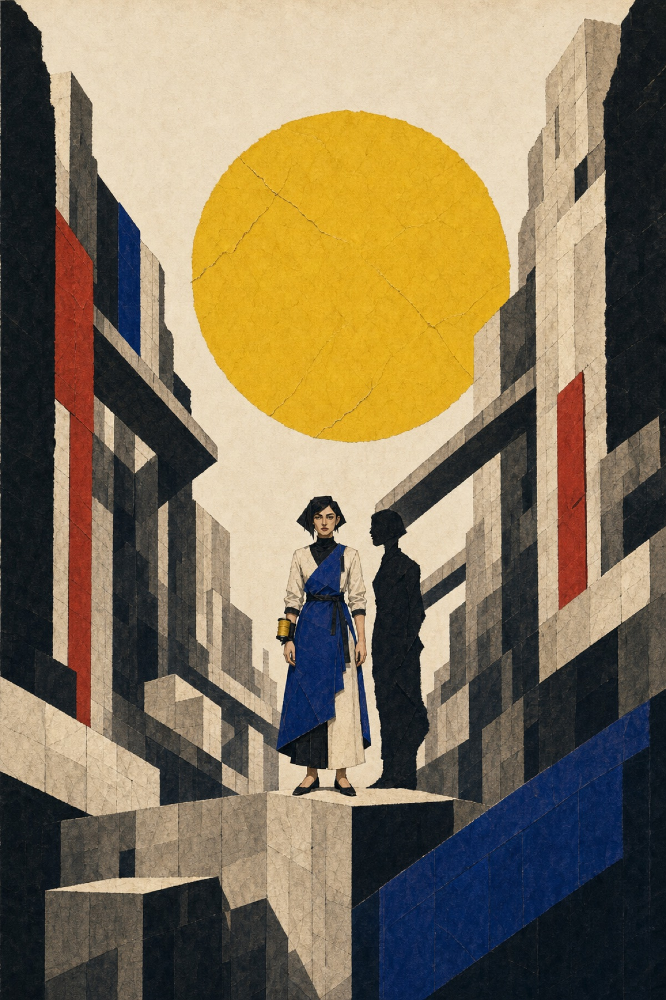

Récit explorable · cinq chapitres
Les Ombres de midi
Dans une cité où l’on recoud les ombres aux corps chaque matin, une tailleuse découvre que les formes noires tentaient peut-être de sauver leurs porteurs.
Caisse de costumes n° 4
Codex
Notices rassemblées après l’évacuation par Tess Orme, ancienne habilleuse auxiliaire du Théâtre des Traverses, à partir d’étiquettes, d’objets et de témoignages incomplets.